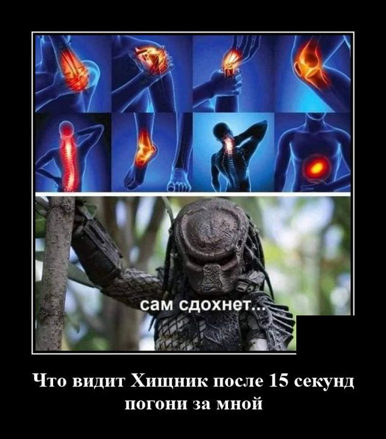

Хищник следит за тобой

Ночь, крыши частных секторов,
собаки воют со дворов
Лишь луна и звёзды
тлеют, тлеют в темноте
Знаешь что -
я сегодня не вернусь домой
Я так давно того хотел,
только не волнуйся за меня
Малый повзрослел!
Водка, пиво, коньячок - я иду на турничок